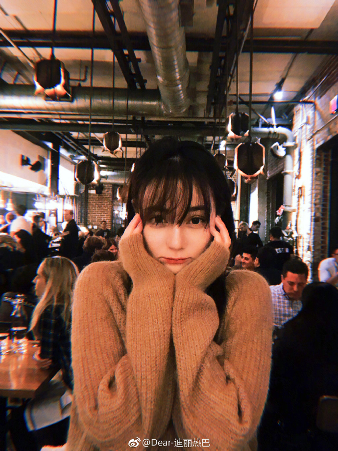
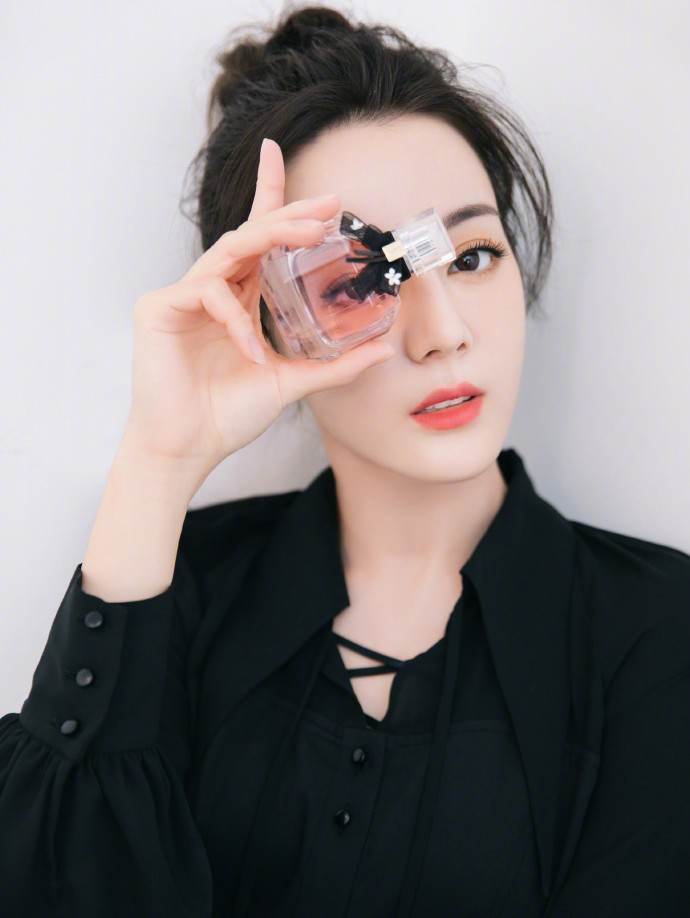

迪丽热巴简介
2013年，迪丽热巴因主演个人首部电视剧《阿娜尔罕》而出道。2014年，她主演了奇幻剧《逆光之恋》。2015年，迪丽热巴凭借爱情剧《克拉恋人》赢得高人气，并获得国剧盛典最受欢迎新人女演员奖。2016年，其主演的现代剧《麻辣变形计》播出；同年，迪丽热巴还凭借喜剧片《傲娇与偏见》获得中英电影节最佳新人奖。2017年，她凭借玄幻剧《三生三世十里桃花》获得白玉兰奖最佳女配角提名。2018年，迪丽热巴成为了金鹰电视艺术节的第七位“金鹰女神” ，并获得了第29届中国电视金鹰奖观众喜爱的女演员、第12届中国金鹰电视艺术节最具人气女演员两项殊荣.
-

热巴自拍1
迪丽热巴的特别，除了是新疆美女之外，最大的特点还有她那双大大且灵动的眼睛，而这也是她最让人一见难忘的地方。 -
热巴自拍2
然而外形上的优势只是迪丽热巴的一大利器，真正鏖战娱乐圈的还是她本人的演艺态度和实力。 -

热巴自拍3
在出道后迪丽热巴陆续出演了《风中奇缘》、《古剑奇谭》等作品，通过这些作品而不断让观众对她有新的了解，并逐渐拓展自己的表演事业。
人物评价
外柔内刚，刚柔并济，或许就是迪丽热巴最大的人格魅力之一。她明明拥有可随意恃靓行凶的美貌，却偏要用努力和实力来实现自己。在戏里，她塑造了或美艳大气或天真可爱或侠骨柔情的影视角色，使观众对其过目不忘；在戏外，她却是率真直爽、努力向上、从不心浮气躁的90后女孩。而在电影《21克拉》中，迪丽热巴的表现很惊艳，她将尺度不好拿捏，还有点“女神经”的角色，演出了喜感可爱的一面。
关于我们
123456789